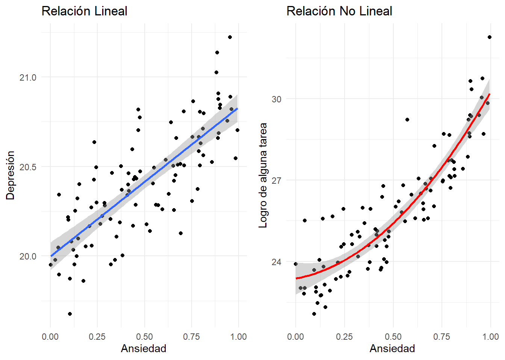
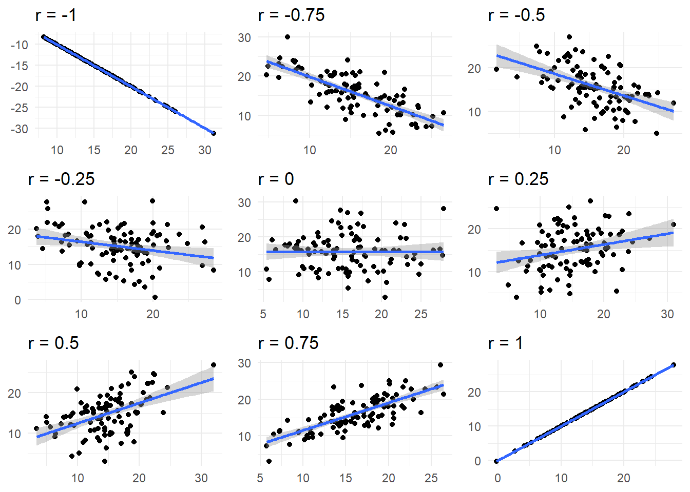

Rows: 87
Columns: 14
$ name <chr> "Luke Skywalker", "C-3PO", "R2-D2", "Darth Vader", "Leia Or…
$ height <int> 172, 167, 96, 202, 150, 178, 165, 97, 183, 182, 188, 180, 2…
$ mass <dbl> 77.0, 75.0, 32.0, 136.0, 49.0, 120.0, 75.0, 32.0, 84.0, 77.…
$ hair_color <chr> "blond", NA, NA, "none", "brown", "brown, grey", "brown", N…
$ skin_color <chr> "fair", "gold", "white, blue", "white", "light", "light", "…
$ eye_color <chr> "blue", "yellow", "red", "yellow", "brown", "blue", "blue",…
$ birth_year <dbl> 19.0, 112.0, 33.0, 41.9, 19.0, 52.0, 47.0, NA, 24.0, 57.0, …
$ sex <chr> "male", "none", "none", "male", "female", "male", "female",…
$ gender <chr> "masculine", "masculine", "masculine", "masculine", "femini…
$ homeworld <chr> "Tatooine", "Tatooine", "Naboo", "Tatooine", "Alderaan", "T…
$ species <chr> "Human", "Droid", "Droid", "Human", "Human", "Human", "Huma…
$ films <list> <"The Empire Strikes Back", "Revenge of the Sith", "Return…
$ vehicles <list> <"Snowspeeder", "Imperial Speeder Bike">, <>, <>, <>, "Imp…
$ starships <list> <"X-wing", "Imperial shuttle">, <>, <>, "TIE Advanced x1",…Análisis de correlación en la Investigación en Psicología
Objetivos
En esta sesión vamos a realizar las siguientes tareas:
Entender la lógica de la correlación y su importancia
Reconocer el aporte de este análisis a la investigación en psicología
Conocer el procedimiento para ejecutar un análisis de la correlación en R
¿Qué es la correlación?
Es un análisis estadístico que nos permite evaluar la relación entre dos variables cuantitativas (al menos la mayor parte del tiempo).
Es importante recordar que una correlación no involucra necesariamente una relación de causa y efecto.
El análisis de la correlación es una pieza importante en la estadística, en tanto puede observarse en el corazón de análisis más complejos como el modelado con ecuaciones estructurales.
Coeficiente de correlación
Indicador que puede tomar valores entre -1 a +1 e informa sobre la fuerza y el sentido de la relación.
| Sentido | Fuerza |
|---|---|
el signo positivo o negativo señala la dirección de la asociación.
|
el valor absoluto del coeficiente puede ser interpretado mediante el criterio de Cohen (1988).
|
Correlación de Pearson
El coeficiente de asociación más común es el coeficiente de correlación de Pearson y su fórmula es la siguiente:
\[ \rho_{xy} = \frac{\Sigma(x_i - \bar{x})(y_i - \bar{y})} {\sqrt{\Sigma(x_i - \bar{x})^2\Sigma(y_i - \bar{y})^2}} \]
Donde \(r\) es el coeficiente de correlación, \(x_i\) los valores de x en la muestra, \(\bar{x}\) la media de los valores de x, \(y_i\) los valores de y en la muestra, \(\bar{y}\) la media de los valores de y. De esta forma, se puede observar que el coeficiente de correlación de Pearson es un análisis paramétrico, en tanto hace uso de la media de los participantes para estimar la asociación entre las variables de interés. En caso no hubiese normalidad en los datos, se tendría que aplicar la correlación de Spearman.
Normalidad
Dicho esto, es importante recalcar que, dado que la correlación requiere del uso de dos variables, su tipo de análisis se denomina “bivariado”. Así, para identificar el tipo de análisis a realizar (paramétrico o no paramétrico), es necesario evaluar la normalidad de la distribución de cada variable. La regla de decisión es la siguiente “si y solo si ambas variables tienen distribución normal, se aplicará la correlación de Pearson”.
Para ilustrar esta situación, veamos un ejemplo. Imaginemos que contamos con la siguiente base de datos starwars .
En esta base, se desea evaluar la relación entre la masa y la altura de los personajes de la película. Para ello, primero necesitamos evaluar la normalidad de ambas variables.
library(rstatix)
starwars |>
shapiro_test(height, mass)# A tibble: 2 × 3
variable statistic p
<chr> <dbl> <dbl>
1 height 0.878 1.45e- 6
2 mass 0.235 6.26e-16Como indica la prueba Shapiro-Wilk, tanto la altura, \(SW = .88, p < .001\), como la masa, \(SW = .24, p < .001\), presentan una distribución no normal de los datos. Así, dado que no ambas no muestran normalidad, se habría de aplicar la prueba de correlación de Spearman.
Patrones de correlación
Hay muchas maneras de concebir la relación entre dos variables. Mayormente estos tipos de correlación toman su nombre a partir de la forma que buscan encontrar en los datos.

Cabe mencionar que en este curso, nos centraremos en las relaciones de corte lineal. Este tipo de asociaciones son comunes en psicología dado que nos permiten una interpretación simple de la dinámica entre dos variables (p.ej. “A mas salud, mayor bienestar”).
Diagrama de dispersión
El gráfico por excelente de la correlación es el gráfico de dispersión de puntos. Este gráfico se puede entender de la siguiente forma “a tal nivel de X, podemos encontrar esta Y”. A fin de entender con mayor facilidad este concepto, te pedimos que pases tu puntero por encima de los puntos del gráfico de dispersión, ¿podrías indicar el valor de x e y en cada uno?
Ahora que entiendes la lógica del gráfico de dispersión, es importante tener en cuenta la línea que se encuentra en medio. Esta línea representa la posible asociación lineal entre las variables de interés. Mas aún, pasa por lo que seria el medio de la nube de puntos, por lo que nos permite tener una descripción de la tendencia de ambas variables.
Actividad 1: Interpretando el diagrama de dispersión
Como se mencionó anteriormente, el coeficiente de correlación puede tomar valores entre -1 y 1. Así, te pedimos que uses el siguiente widget y respondas a las siguientes preguntas:
- ¿Que pasará si introduces valores entre 0 y 1 como coeficientes de correlación? ¿Cómo será la pendiente que forma la línea?
- ¿Que pasara si introduces valores entre -1 y 0 como coeficientes de correlación? ¿Cómo será la pendiente que forma la línea?
- ¿y si colocas el cero? ¿es una pendiente? ¿Por qué?
- Coloca los valores de 1 y -1, ¿que similitudes y diferencias hay entre estos dos tipos de correlación?
#| standalone: true
#| viewerHeight: 500
library(shiny)
library(ggplot2)
library(tidyverse)
set.seed(123)
rn <- sample(seq(-1, 1, by = .1), 1)
# Define UI for app that draws a histogram ----
ui <- fluidPage(
numericInput("rc", "Coeficiente de correlación:",
value = rn, min = -1, max = +1, step = .1),
plotOutput("dispPlot"))
server <- function(input, output, session) {
grf <- function(rr) {
if (abs(rr) != 1) {
x1 <- rnorm(100, 15, 5)
x2 <- scale(matrix(rnorm(100), ncol= 1))
x12 <- cbind(scale(x1),x2)
c1 <- var(x12)
chol1 <- solve(chol(c1))
newx <- x12 %*% chol1
zapsmall(cor(newx))
all.equal( x12[,1], newx[,1] )
newc <- matrix(
c(1, rr,
rr, 1), ncol = 2)
eigen(newc)
chol2 <- chol(newc)
finalx <- newx %*% chol2 * sd(x1) + mean(x1)}
if (rr == -1) {
x1 <- rnorm(100, 15, 5)
x2 <- -x1
finalx <- data.frame(x1, x2)
}
if (rr == 1) {
x1 <- rnorm(100, 15, 5)
x2 <- x1
finalx <- data.frame(x1, x2)
}
finalx |>
data.frame() |>
as_tibble() |>
set_names(c("x", "y"))
}
output$dispPlot <- renderPlot({
grf(input$rc) -> cor_data
cor_data |>
ggplot(aes(x = x, y = y)) +
geom_point() +
geom_smooth(method = "lm", formula = "y ~ x") +
theme_minimal() +
scale_x_continuous(limits = c(5, 25),
breaks = seq(5, 25, by = 5)) +
labs(title = NULL,
x = "Variable X", y = "Variable Y") -> p
input$rc == -1 -> sol
if(sol) {
p + scale_y_continuous(limits = c(-25, -5),
breaks = seq(-5, -25, by = -5))
} else {
p + scale_y_continuous(limits = c(5, 25),
breaks = seq(5, 25, by = 5))
}
})
}
# Create Shiny app ----
shinyApp(ui = ui, server = server)Como puedes observar, la “pendiente” o caída de la recta va a ser diferente dependiendo del coeficiente de correlación que se tenga. En la Figure 2 podrás ver una figura resumen sobre las correlaciones y las tendencias que puede tener la línea.

De este gráfico podemos extraer varias ideas:
- el sentido de la pendiente indica si la relación es positiva o negativa. Si la pendiente es descendente ( \ ), estamos frente a una asociación negativa, caso contrario ( / ), la asociación sera directa o positiva.
- En las asociaciones con valor absoluto de 1 vemos que la línea pasa por absolutamente todos los puntos. Además, conforme la relación se reduzca en valor absoluto, la nube de puntos empieza a dispersarse mas de la línea central.
- Tradicionalmente, se entiende que las asociaciones de 1 y -1 son perfectas, de modo que X como Y son las mismas variables.
- En la asociación con \(r = 0\) no se observa una tendencia de la nube de puntos. Aún más, la linea azul pasa a ser de una pendiente a un llano.
Actividad 2: Adivina la correlación
En base a lo revisado en el bloque anterior, estas listo para intentar identificar el coeficiente de correlación de los siguientes gráficos. Para ello, observa bien el diagrama de dispersión de puntos y propón un valor de coeficiente en el espacio demarcado. Te recomendamos que pienses en términos de “positivo y negativo” y de magnitud del coeficiente (pequeño, mediano o grande) para estimar un posible valor. Puedes intentar este ejercicio cuantas veces lo requieras.
Ten en cuenta que esta mirada al gráfico es muy común en el análisis de datos, puesto que nos da una primera mirada sobre la posible asociación entre nuestras variables. Los gráficos de dispersión permiten a los grupos de investigación tener un primer vistazo de las asociaciones encontradas y pueden orientar a futuros análisis.
Finalmente, en el siguiente apartado, aprenderás a estimar formalmente un coeficiente de correlación a partir de un conjunto de datos.
Pasos para estimar una correlación
- Plantear las hipótesis de trabajo (HT)
- Plantear las hipótesis estadísticas para cada HT
- Explorar la asociación con un diagrama de dispersión de puntos
- Evaluar la normalidad
- Realizar el análisis de correlación
- Brindar una respuesta o conclusión final
Ejemplo
Un grupo de estudiantes de la Facultad de Psicología, interesados en el trabajo de las Brigadas PUCP, planteó como objetivo general de su estudio, evaluar la relación que existe entre la resiliencia y la sintomatología de estrés post-traumático en un grupo de personas damnificadas por el terrorismo. Se espera que entre ambas variables se establezca una relación significativa. Dicho grupo te solicita que realices el análisis estadístico que pueda dar respuesta a su objetivo y que brindes tu conclusión en función a la hipótesis de trabajo.
Paso 0: cargar los datos
Si deseamos, podemos tener una visualización más elegante de la información. Para ello, abreviaremos a dos decimales todas las variables cuantitativas de la base y pediremos al paquete DT que nos genere una bonita tabla:
Paso 1: hipótesis de trabajo
HT: Existe relación entre los niveles de resiliencia (R) y la sintomatología de estrés post-traumático (S) de un grupo de personas damnificadas por el terrorismo.
Paso 2: hipótesis estadísticas
\[ \displaylines{H_0:\rho_{RS} = 0 \\ H_1:\rho_{RS} \neq 0} \]
Paso 3: diagrama de dispersión
- Traemos la base donde se encuentran las variables de interés
- Definimos que variables tendremos en el eje “x” y en el eje “y”.
- Generamos la dispersión de puntos
- Colocamos la recta que nos puede ayudar a observar la tendencia y posible intensidad
- Señalamos que queremos un tema minimalista (paso opcional).
A partir del diagrama de dispersión, se observa que puede existir una relación negativa y mediana entre la resiliencia y en el estrés post traumático.
Paso 4: evaluar la normalidad
A partir de la prueba de normalidad de Shapiro-Wilk, se observa que el PTSD, \(SW = .99, p = .59\) y la resiliencia \(SW = .98, p = .253\), presentan una distribución normal de los datos. Por todo ello, se aplicará la correlación de Pearson.
Paso 5: análisis de la correlación
Traemos los datos
usamos la función cor_test para generar la correlación
El método empleado fue el de Pearson, dada la normalidad
Conclusión: A partir del análisis de correlación de Pearson, se encontró una relación estadísticamente significativa, grande e inversa entre la resiliencia y el PTSD, \(r_{(98)} = -.54, p < .001\).
Tip
Para construir la conclusión en el formato APA, tenemos que fijarnos en los siguientes 4 elementos:
Significatividad: Por medio de valor p, identificamos si el resultado es significativo (p < .05). En este caso, p es muy pequeño, incluso < .001, por lo que es significativo.
Sentido: El signo de la correlación (cor), nos indica si la relación es negativa o positiva. En este caso, el signo negativo nos indica que la asociación es inversa.
Fuerza: El valor absoluto de la correlación (cor) nos permite identificar, según el criterio de Cohen (1988), la magnitud de la asociación. Ver Table 1. En este caso, la correlación es grande (r > .5).
Grados de libertad: N – 2, donde N es la cantidad de participantes. En este caso, 100 - 2 = 98.
Ejercicios
Un grupo de estudiantes de la Facultad de Psicología, interesados en la problemática de salud mental en jóvenes ha planteado una investigación con el objetivo de evaluar las relaciones entre salud percibida, bienestar social, resiliencia, depresión y estrés en un grupo de estudiantes universitarios. Ellos solicitan tu apoyo para realizar el análisis de sus datos. Resuelve las siguientes preguntas, teniendo en consideración los pasos señalados en clase.
1. Plantea las hipótesis de trabajo (HT) y las hipótesis estadísticas para cada HT.
2. Explora el patrón de relación entre las variables con un diagrama de dispersión y brinda una interpretación del gráfico.
3. Evalúa la normalidad de los datos e indica el coeficiente de correlación pertinente a utilizar.
4. Analiza estadísticamente las hipótesis estadísticas (H0 y H1). Aplica la regla de decisión.
5. Brindar respuesta a las hipótesis de trabajo
Utiliza el archivo de SPSS “Base – Ejercicios correlación”
- El grupo de investigadores quiere comprobar si existe una relación entre la salud percibida y el bienestar social. ¿Se puede comprobar dicha asociación? Brinda tu conclusión.
- A partir de la revisión de la literatura, lxs investigadores esperan econtrar que la resiliencia se asocie negativamente con el estrés y la depresión. ¿Se comprueban las hipótesis? ¿La relación más fuerte se establece entre resiliencia y estrés? Brinda tu conclusión.
- Por último, el grupo se plantea explorar si existe una relación entre la salud percibida y la depresión ¿Qué se puede concluir al respecto?